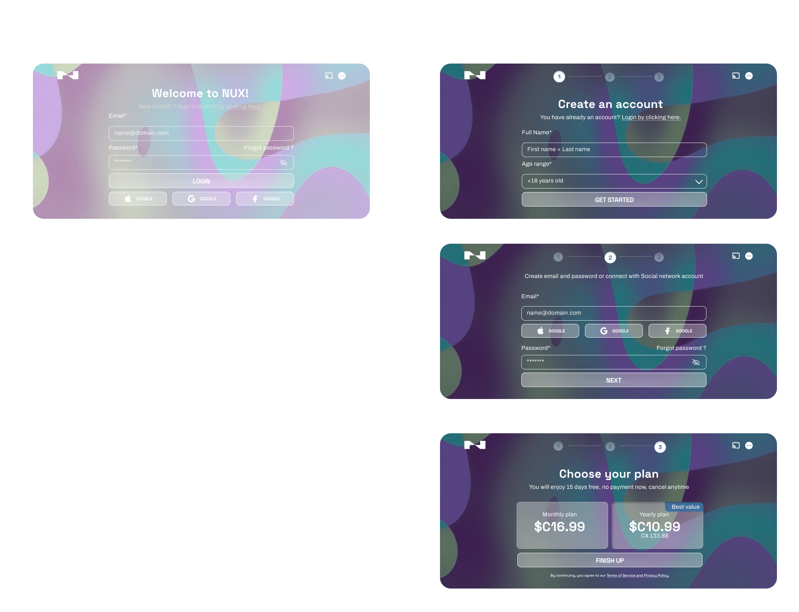

— UX-UI
Application
Stream NUX
- Projet réalisé dans le cadre d'une certification HEC Montréal — démarche UX complète appliquée à un produit numérique.
NUX est un service mobile‑only qui propose du contenu multimédia thématique (films, séries, jeux, cours, documentaires). Sa force : relier les contenus par thèmes narratifs pour créer des parcours courts, intelligents et personnalisés. Grâce à ses partenariats et à un catalogue d’environ 9900 contenus, NUX mise sur une expérience fluide, intuitive et exploratoire, pensée pour les voyageurs, les jeunes et les utilisateurs en mouvement.
Défis :
NUX doit transformer un catalogue vaste et hétérogène en une expérience mobile simple et intuitive. L’enjeu principal : organiser et relier des contenus très différents (films, séries, jeux, cours, documentaires) autour de thèmes narratifs sans créer de surcharge cognitive.
- - Unifier des médias variés dans une navigation cohérente sur mobile.
- - Rendre les parcours thématiques lisibles malgré la richesse des ramifications.
- - Adapter l’expérience aux usages en mouvement : sessions courtes, attention limitée.
— Analyse comparative
Une analyse comparative des plateformes de streaming et d’applications mobiles a permis d’identifier les bonnes pratiques en matière de navigation, de recommandations et de hiérarchie visuelle. Ce benchmark a révélé les limites des approches actuelles pour gérer des contenus variés et a mis en lumière les opportunités pour NUX : simplifier l’accès aux thèmes, clarifier les liens entre médias et renforcer la cohérence mobile. Ces constats ont servi de base stratégique pour définir les besoins et orienter la refonte des parcours thématiques.
— Design des prototypes
Des prototypes fonctionnels ont été développés pour matérialiser les nouveaux parcours et tester la fluidité de l’expérience mobile. Les maquettes ont permis d’évaluer la lisibilité des thèmes, la pertinence des recommandations et la cohérence entre les différents types de contenus. Elles ont servi de support aux ajustements UX, garantissant une navigation plus intuitive et une exploration thématique plus engageante.
— Test utilisateurs
Des tests utilisateurs ont été menés pour évaluer la compréhension des thèmes, la facilité de navigation et la pertinence des recommandations. Les retours ont permis d’identifier les zones de confusion, d’améliorer la fluidité des parcours et d’affiner les interactions. Cette validation terrain a assuré une expérience mobile intuitive, engageante et adaptée aux usages rapides des voyageurs et des utilisateurs en mouvement.
— Design UI
Le défi de NUX était de traduire visuellement une idée forte : chaque contenu est une porte vers un autre, chaque choix déclenche une ramification narrative. L’interface devait donc refléter cette dynamique d’exploration, tout en restant parfaitement lisible sur mobile.
Le design UI s’appuie sur une identité visuelle construite autour de Space Grotesk, une typographie précise et technique, évoquant les systèmes de navigation et le mouvement — un écho direct à l’expérience proposée par NUX. Autour de cette structure typographique, des formes organiques et fluides illustrent les connexions invisibles entre les contenus : des thèmes qui se croisent, des idées qui se prolongent, des histoires qui se déploient. Une palette vibrante renforce cette sensation de découverte continue, reflétant la diversité du catalogue et l’émotion propre à chaque parcours.
